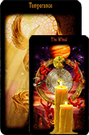

Ваш запрос и детали разговора остаются только между нами.

Отношения, семья, будущее, онлайн
София
Таро о чувствах, семье и личном будущем
Бережно помогаю разобраться в отношениях, семейных вопросах и тревожных решениях, когда хочется спокойного ответа без давления и громких обещаний.
Личная консультация
Подходит, если хочется не просто услышать ответ, а почувствовать спокойствие и ясность в своей ситуации.
Можно обратиться из любого города без сложной подготовки.
Если для запроса это уместно, я подскажу, что именно понадобится.
Каждая история рассматривается отдельно, без шаблонных ответов.
Услуги
С чем чаще всего обращаются к Софии

ТароРасклад на отношения
Помогает увидеть чувства, скрытые причины напряжения и возможные направления для разговора.
Получить консультациюПросмотр ближайших событий
Подходит, если нужно понять, куда движется ситуация и где лучше не торопиться.
Получить консультациюСемейные вопросы
Конфликты, дистанция, недосказанность, переживания за брак и атмосферу внутри семьи.
Получить консультациюРасклад на год
Спокойный обзор важных тем, возможных точек роста и периодов, где стоит быть внимательнее.
Получить консультациюРабота по фото
Если человек далеко, а вопрос связан с отношениями, связью между людьми или тревожной неопределённостью.
Получить консультациюЛичная онлайн-консультация
Для сложных чувств, важных решений и ситуаций, где нужна поддержка, ясность и мягкий разбор.
Получить консультациюКак проходит консультация
Мягко, спокойно и без перегруза лишними словами
Вы пишете свой вопрос
Коротко описываете, что вас беспокоит: отношения, семья, тревога, будущее или повторяющаяся ситуация.
Я смотрю глубину запроса
Провожу просмотр, чтобы понять эмоциональный фон, скрытые причины и возможные развилки.
Вы получаете понятную трактовку
Без давления и категоричности. С акцентом на то, что поможет почувствовать ясность и внутреннюю опору.
Фотогалерея
3D-галерея в мягкой тёплой подаче


Галерея адаптирована под мобильные устройства и не крутится, пока находится вне экрана.
Видео
Небольшой видео-блок, чтобы почувствовать стиль общения заранее
Видео Софии
Структура блока уже готова к добавлению второго видео на десктопе без полной переделки вёрстки.
О Софии
Спокойная, доверительная подача для тех, кому важно не потеряться в эмоциях.
Ко мне приходят, когда нужно разобраться в отношениях, почувствовать перспективу, прояснить семейную ситуацию или просто получить честный взгляд на то, что происходит сейчас.
Я работаю бережно и конфиденциально, чтобы консультация не усиливала тревогу, а помогала собрать внутреннюю картину в понятный и спокойный ответ.
Сертификаты
Два подготовленных места под документы и подтверждения
Отзывы
Короткие отклики после личных и онлайн-консультаций
Обратите внимание, что результаты индивидуальны и могут отличаться в каждом случае.
После разговора с Софией ушла тревога. Я впервые за долгое время увидела ситуацию в отношениях спокойно и без самообмана.
Любовь и чувстваОбращалась по семейному вопросу. Консультация была мягкой, но очень точной, и многое стало на свои места.
СемьяПонравилось, что нет давления и громких обещаний. Есть ощущение, что тебя слушают и действительно хотят помочь разобраться.
Личная консультацияПолучила расклад на будущее и важный внутренний ориентир. После разговора стало легче принять решение.
БудущееОбращалась онлайн, всё прошло спокойно и деликатно. Очень тёплая подача и аккуратные формулировки.
Онлайн-форматСофия помогла увидеть не только чувства, но и причины конфликта. Это дало ощущение ясности и опоры.
Разбор отношенийFAQ
Частые вопросы перед первой консультацией
Можно ли получить консультацию онлайн?
Да. Это удобный формат для большинства запросов, особенно если вам важно обратиться быстро и спокойно.
Можно ли задать вопрос по отношениям?
Да. Это один из самых частых запросов: чувства, пауза в общении, семья, дистанция, повторяющиеся конфликты.
Нужна ли фотография для просмотра?
Не всегда. Если фото действительно поможет точнее настроиться на ситуацию, я скажу об этом заранее.
Конфиденциально ли обращение?
Да. Все детали консультации и сама история обращения остаются в личном формате.
Как быстро можно написать?
Связаться можно через WhatsApp, Telegram или звонок. Дальше я отвечу по формату и свободному времени.
Можно ли смотреть будущее и личные решения?
Да. Консультация помогает увидеть возможные варианты и не принимать важные решения только на эмоциях.
Связь и запись
Если вам нужен спокойный разбор по отношениям, семье или будущему, напишите Софии удобным способом.
Расскажите коротко, что сейчас беспокоит, и я подскажу, какой формат консультации подойдёт лучше.